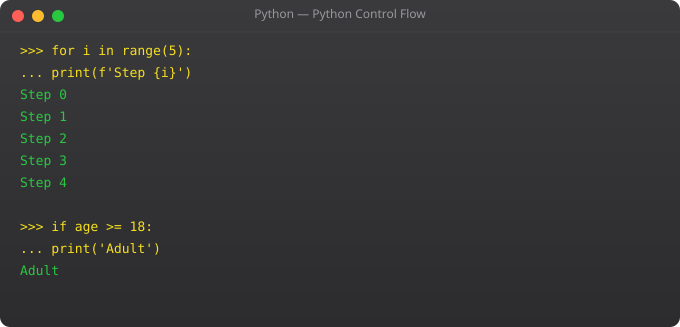

You know how to store data. Now let us make Python do things with that data. Operators are how Python performs actions — calculations, comparisons, logical decisions. This is where your programs start to do real work.
These perform mathematical calculations:
a = 20
b = 6
print(a + b) # 26 — Addition
print(a - b) # 14 — Subtraction
print(a * b) # 120 — Multiplication
print(a / b) # 3.333... — Division (always returns float)
print(a // b) # 3 — Floor division (removes decimal)
print(a % b) # 2 — Modulo (remainder after division)
print(a ** 2) # 400 — Exponent (a to the power 2)The modulo operator % is very useful in programming. It tells you if a number is even or odd, helps with cycling through lists, and has many other practical uses.
These compare two values and always return True or False:
x = 10
y = 20
print(x == y) # False — Equal to
print(x != y) # True — Not equal to
print(x > y) # False — Greater than
print(x < y) # True — Less than
print(x >= 10) # True — Greater than or equal
print(y <= 20) # True — Less than or equalLogical operators combine multiple conditions:
age = 22
has_id = True
# and — Both conditions must be True
print(age >= 18 and has_id) # True
# or — At least one condition must be True
print(age < 18 or has_id) # True
# not — Reverses the boolean
print(not has_id) # FalseShorthand for updating variable values:
score = 100
score += 10 # score = score + 10 → 110
score -= 5 # score = score - 5 → 105
score *= 2 # score = score * 2 → 210
score //= 3 # score = score // 3 → 70
score %= 9 # score = score % 9 → 7Real programs interact with users. Python's input() function pauses the program and waits for the user to type something and press Enter:
name = input("What is your name? ")
print("Hello, " + name + "!")Important: input() always returns a string, even if the user types a number. If you need to do math with the input, you must convert it:
age_input = input("Enter your age: ")
age = int(age_input) # Convert string to integer
birth_year = 2025 - age
print("You were born in:", birth_year)Python's f-strings are the cleanest way to include variables inside printed text. Just put an f before the quote and use curly braces:
name = "Suraj"
age = 22
city = "Rajkot"
print(f"Name: {name}")
print(f"Age: {age}")
print(f"I live in {city} and I am {age} years old.")
print(f"Next year I will be {age + 1}")F-strings are not just cleaner — they are also faster than older string formatting methods. Use them as your default.
Let us combine everything from this part into one small program:
print("Simple Python Calculator")
num1 = float(input("Enter first number: "))
num2 = float(input("Enter second number: "))
print(f"Addition: {num1 + num2}")
print(f"Subtraction: {num1 - num2}")
print(f"Multiplication: {num1 * num2}")
if num2 != 0:
print(f"Division: {num1 / num2:.2f}")
else:
print("Cannot divide by zero")Notice :.2f inside the f-string — this formats the float to 2 decimal places. Small details like this make your output much more professional.
When multiple operators appear in one expression, Python follows a specific order: parentheses first, then exponents, then multiplication/division, then addition/subtraction. This is the same as standard math (PEMDAS/BODMAS). When in doubt, use parentheses to be explicit:
result1 = 2 + 3 * 4 # 14 — multiplication first
result2 = (2 + 3) * 4 # 20 — parentheses first
print(result1, result2)Think about what you can already do: store data in variables, perform calculations, compare values, take input from users, and display formatted output. That is not nothing — that is the core of a huge number of small utility programs. In Part 4, we will add the ability to make decisions using if-else statements, which is where programs start to feel truly intelligent.
Python's and and or operators use short-circuit evaluation — a behavior that has both performance and practical implications. With and, if the first condition is False, Python does not evaluate the second condition because the overall result is already determined to be False. With or, if the first condition is True, the second is not evaluated. This matters when the second condition involves a function call or an operation that has side effects. Understanding short-circuit evaluation lets you write more efficient conditions and use a common Python pattern: result = value or default_value, which returns value if it is truthy, and default_value otherwise.
Python's f-strings (formatted string literals, introduced in Python 3.6) are the most modern and readable way to embed variables and expressions in output strings. Instead of string concatenation or the older .format() method, you prefix the string with f and place variables or expressions directly in curly braces:
name = "Suraj"
score = 92.5
print(f"Student {name} scored {score:.1f}%")
# Output: Student Suraj scored 92.5%
items = 7
price = 49.99
print(f"Total for {items} items: Rs {items * price:.2f}")
# Output: Total for 7 items: Rs 349.93f-strings are the recommended approach for string formatting in modern Python. They are faster than older methods and significantly more readable for complex outputs.
Write a simple Python calculator that takes two numbers as user input using input(), converts them to floats, and then prints the result of all four arithmetic operations (addition, subtraction, multiplication, division). Handle the edge case of division by zero using a simple conditional check. Use f-strings for the output formatting.